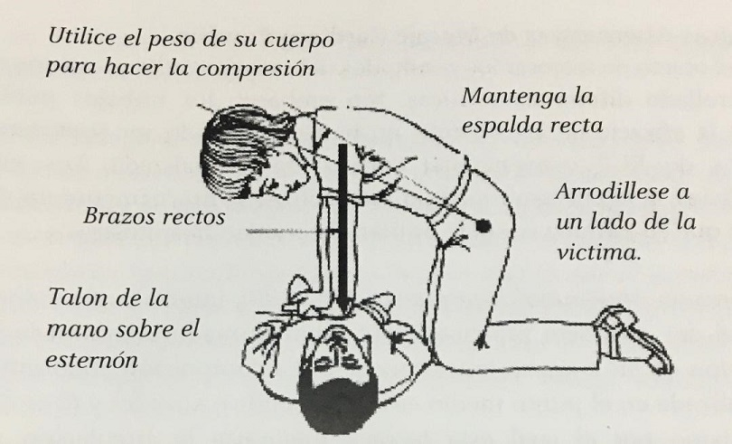

1️⃣ Verifica la situación
Asegúrate de que el lugar es seguro. Sacude suavemente a la persona y pregúntale si está bien. Si no responde, actúa de inmediato.
Cuando el corazón se detiene, cada segundo cuenta. La RCP puede salvar vidas si actúas rápido y con calma.
Asegúrate de que el lugar es seguro. Sacude suavemente a la persona y pregúntale si está bien. Si no responde, actúa de inmediato.

Pide ayuda inmediatamente. Si hay alguien cerca, dile que llame mientras tú comienzas.

Observa si respira durante máximo 10 segundos. Si no respira o lo hace de forma extraña, inicia RCP.

Las compresiones mantienen la sangre circulando cuando el corazón se detiene. Hazlas correctamente para salvar una vida.

Coloca tus manos en el centro del pecho. Presiona fuerte y rápido: 100 a 120 veces por minuto.

Haz 30 compresiones y, si sabes cómo, da 2 respiraciones. Repite sin parar.

Continúa hasta que llegue ayuda médica o la persona recupere la respiración.

Las respiraciones ayudan a llevar oxígeno al cerebro. Solo hazlas si sabes cómo.

Si la persona no respira o no tiene pulso, está en paro cardíaco. Debes actuar inmediatamente.
La desesperación reduce la calidad de las compresiones. Respira y actúa.
Los codos doblados reducen la fuerza. Mantenlos completamente rectos.
Menos de 100 compresiones por minuto no es suficiente para el cerebro.
No pares más de 10 segundos. Cada pausa reduce las posibilidades.
Solo el talón de la mano en el centro del pecho — nunca los dedos.
Debes comprimir al menos 5 cm. Si tienes miedo de hacerle daño, igual hazlo.

Después de 4–6 minutos sin oxígeno, el cerebro empieza a dañarse.

Si hay un desfibrilador cerca, úsalo. Puede reiniciar el corazón.